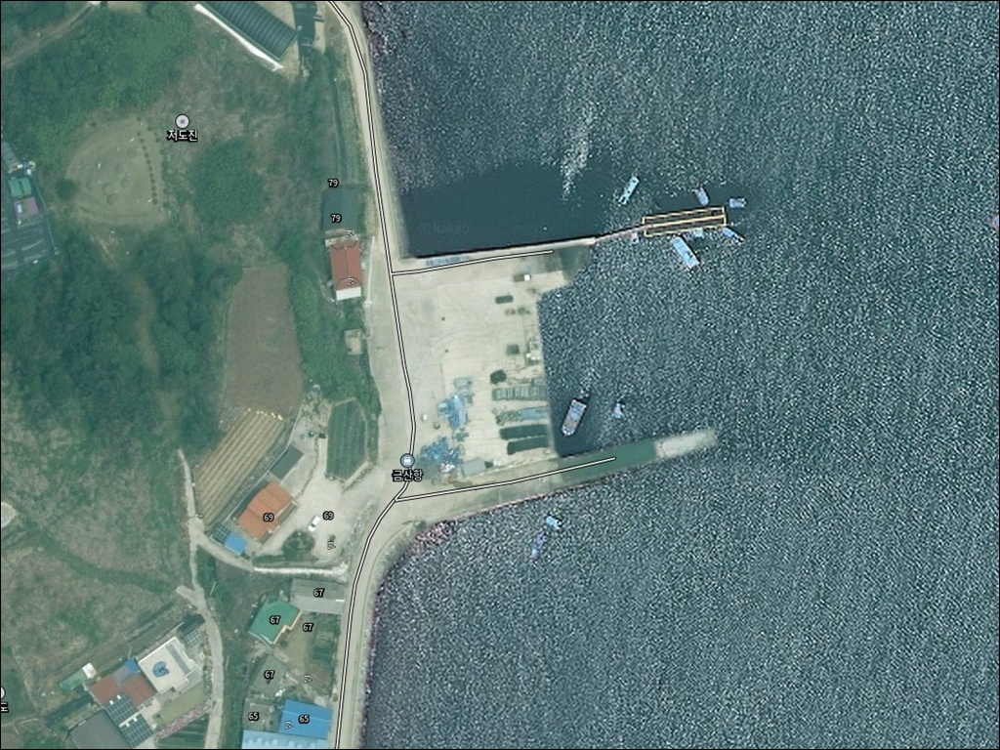
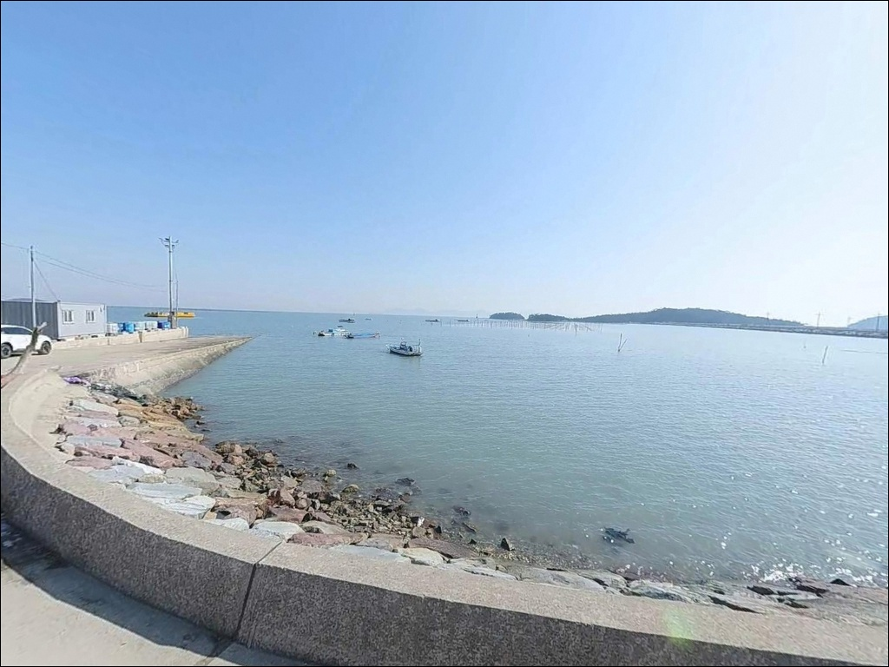
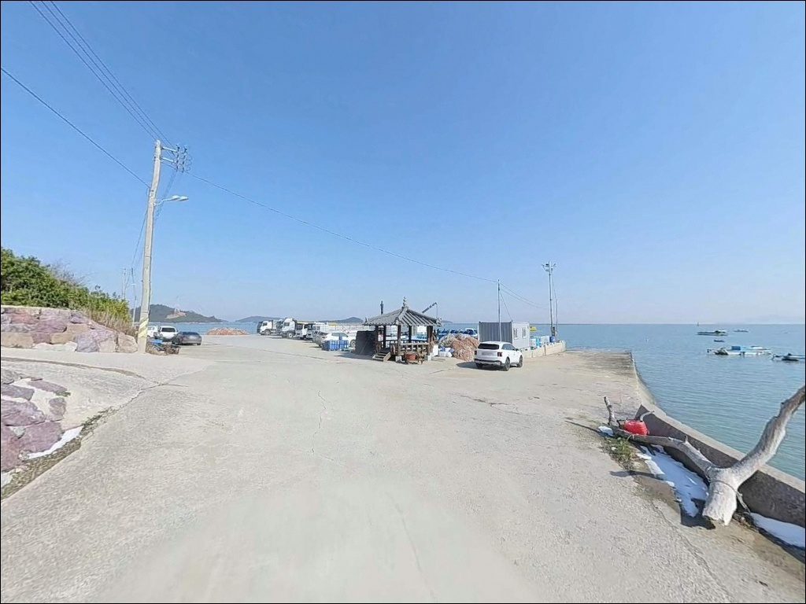
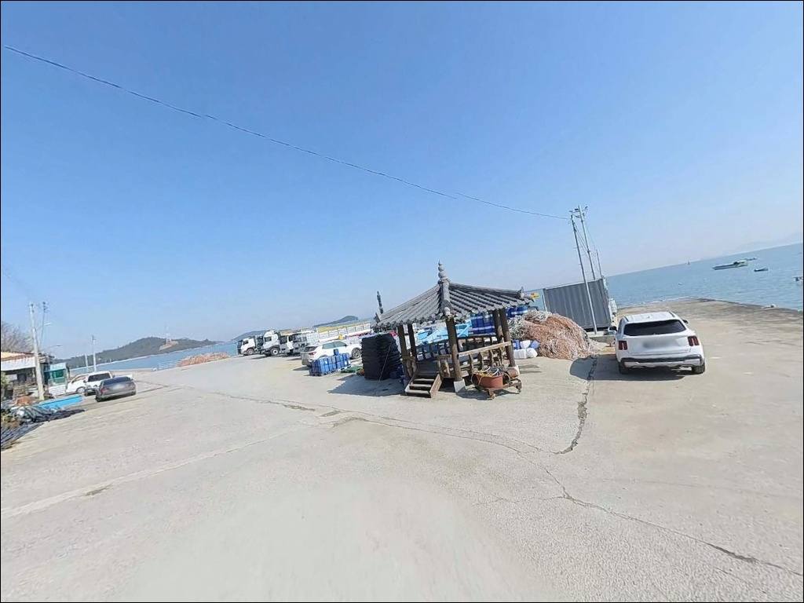
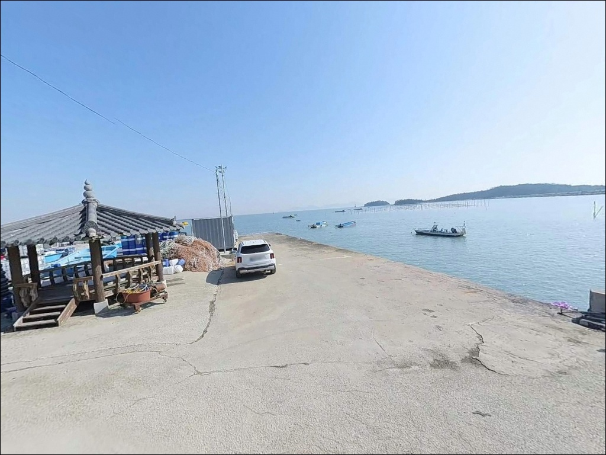
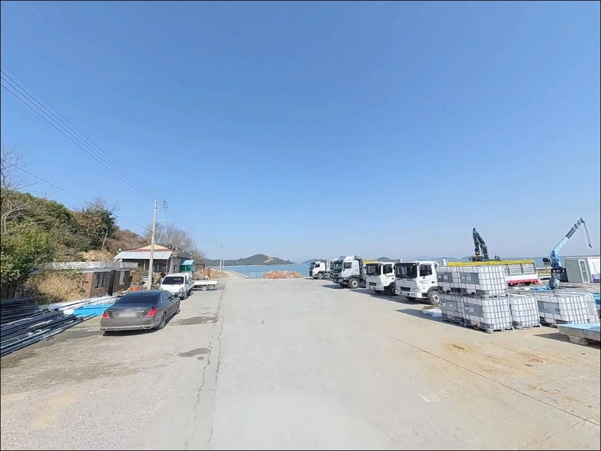
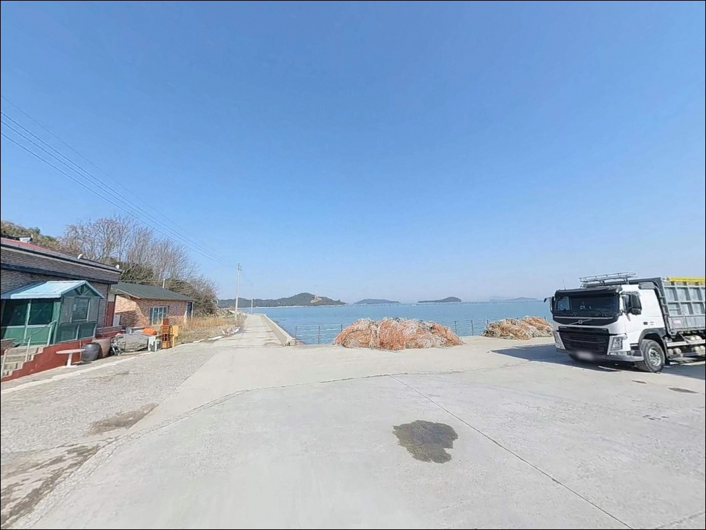
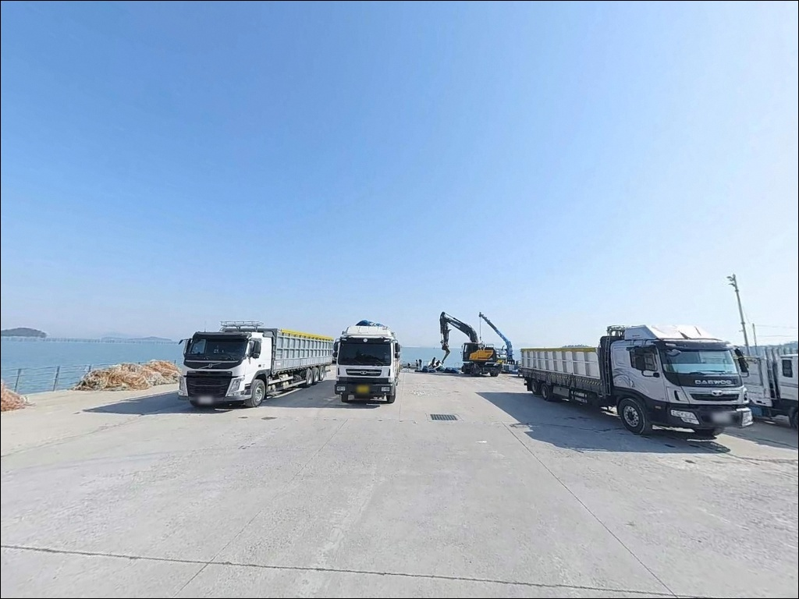
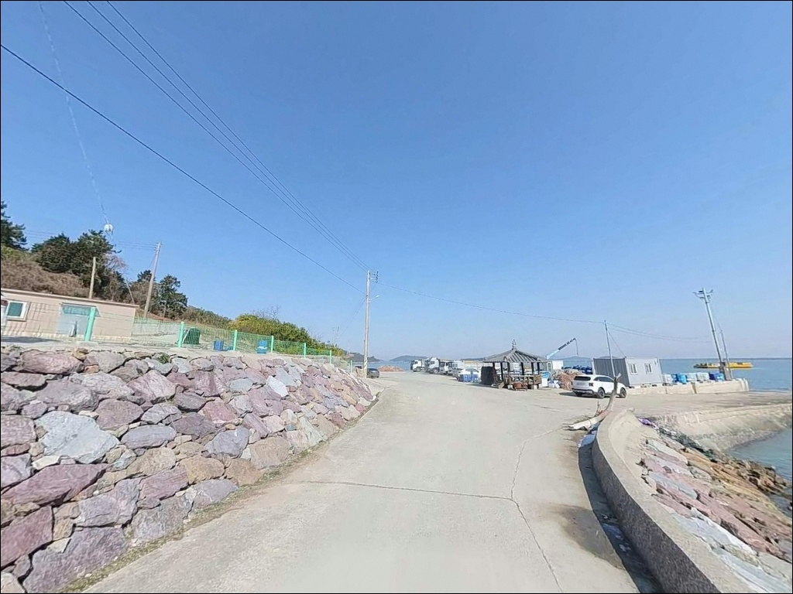

금산항(금산선착장), 전남 신안군 바다의 여운이 오래 남는 차박, 낚시 감성 포인트
이 페이지에는 광고(제휴 링크 포함)가 있으며, 광고 링크를 통해 구매하면 운영자가 판매 수익 또는 수수료를 받을 수 있습니다. 포인트 사진: 카카오맵 스카이뷰·로드뷰. 이 페이지의 지도·사진 이미지는 카카오맵의 실제 서비스 이미지와 다를 수 있습니다.


포인트 안내
금산항(금산선착장)
전남 신안군 안좌면 금산리 16
물때 계산 없이 안좌도 서남쪽 끝
금산항을 찾으면,
간조에 도착한 순간 수심이 빠져나가
채비를 내릴 자리 자체가 사라집니다.
서남해 다도해 특성상 간만의 차가 크고,
이곳은 그 영향을 직접 받는 구조의
소규모 어항입니다.
이 글은 금산항의 진입 여건, 낚시 지형 구조,
어울리는 낚시 스타일,
차박 체류 조건에 집중합니다.
조황 단정이나 특정 어종 보장은
이 글의 범위에 포함되지 않습니다.

1. 진입 동선과 포인트 접근성
금산항까지의 육로 진입은
천사대교를 통해 암태도로 건너간 뒤,
팔금도를 거쳐 안좌도로 이어지는 경로가 기본입니다.
2019년 천사대교 개통 이후
안좌도까지의 육로 접근이 가능해졌지만,
섬 내부 도로는 폭이 좁고
속도 제한 구간이 많아
거리 대비 실제 이동 시간이 길게 걸립니다.
금산리 끝단까지 이어지는 진입로는
마을 통과형 구간이 포함되어 있어 폭이 좁은 편입니다.
항 직전에는 비포장 또는 협소한
콘크리트 포장 구간이 나타날 수 있어,
초행이라면
위성지도로 진입로를 미리 확인하고
출발하는 것이 안전합니다.
주차는 방파제 입구 인근 공터와
선착장 주변 여유 공간을 활용하는 방식이
일반적입니다.
소형~중형 차량 기준 1~2대 수용 수준이며,
어선 입출항 동선을 막지 않는
자리를 먼저 확인해야 합니다.

2. 차박 환경과 야간 체류 여건
금산리는 안좌도 서남쪽 끝의
소규모 어촌 마을입니다.
민가 밀집도가 낮고 야간 차량 통행이 거의 없어
조용한 체류 환경이 만들어집니다.
항구 주변에는 기본 조명이 일부 있는 편이지만,
낚시 구간까지 조명이 충분하지 않을 수 있어
개인 헤드랜턴 준비는 필수입니다.
차박이란 차량을 숙박 공간으로 활용하며
현장에서 하룻밤 머무는 여행 방식입니다.
금산항은 조용한 분위기상 단기 체류에 어울리지만,
주차 공간이 협소해
대형 캠핑카보다는
SUV나 소형 밴 중심의 스텔스 차박에
더 맞는 구조입니다.
외항 쪽이 열려 있는 구조 특성상
기상 조건에 따라 바람 영향이 클 수 있습니다.
차박을 메인으로 계획한다면
방파제 내항 쪽 주차 공간이
바람 노출을 줄이는 자리로 적합하며,
현장 도착 후 여건을 먼저 살피는 것이 순서입니다.


3. 주변 편의시설 및 인프라 현황
금산항 반경 내에는
편의점이나 식당이 없습니다.
안좌도 서남단 소규모 마을 항구 특성상
완전 자급 체제가 기본 전제입니다.
식수, 얼음, 낚시 소품, 연료, 비상약품 모두
출발 전에 갖춰야 합니다.
안좌면 중심부 방향으로
차량으로 10분 내외 이동하면
안좌면사무소 인근의 소형 마트와
기본 편의시설을 이용할 수 있습니다.
응급 상황 발생 시에는
목포 방향으로의 이동이 기본 전제이므로,
비상연락처와 이동 경로를 미리 파악해 두어야 합니다.
진입로가 좁고 편의시설이 없는 포인트일수록,
출발 전 자급 준비 수준이
방문의 성패를 가릅니다.

4. 진입 전 반드시 챙겨야 할 준비사항
금산항 방문 전 가장 먼저 확인할 것은
물때입니다.
신안 안좌도 일대는 서남해 다도해 특성상
간만의 차가 크고,
간조 시에는 수심이 급격히 낮아져
채비 운용 자체가 어려워집니다.
바다타임에서
안좌면 기준 물때를 확인하고,
만조 전후 2~3시간 타이밍을 목표로
입장 시각을 맞추는 것이 기본 전략입니다.
기상 조건도 미리 살펴야 합니다.
섬 지역 특성상 기상 변화가 빠르고,
외항 노출 구간에서는 갑작스러운
파도와 바람에 대처하기 어려울 수 있습니다.
출발 당일 아침 기상청 해상예보를 다시 확인하고,
파고 1m 이상이면
외항 구간 진입은 자제하는 것이 안전합니다.
소규모 어항 특성상 어선 조업이 이루어지는 공간입니다.
어선 입출항 동선과 어구에 접촉하지 않는
자리를 선택하고,
야간에는 구명조끼와 헤드랜턴을
반드시 갖춰야 합니다.

5. 수심 변화 구간이 낚시 여건을 결정합니다
금산항은 방파제와 선착장이 조합된
소규모 항구 구조입니다.
내항 수심은 4~6m 수준으로 얕은 편이며,
방파제 끝단과 외항 방향에서는
수심이 6~9m 수준으로 깊어지는
수심 변화 구간이 형성됩니다.
이 변화 구간이 낚시 자리를 선택하는
핵심 기준이 됩니다.
안좌도 서남쪽 해역은
물색이 맑은 편에 속합니다.
맑은 물색 조건은 에깅이나 루어낚시에서
어종의 시각적 반응을 유도하기 좋은 환경이며,
외항 방향의 조류 흐름도
루어 채비가 힘을 받을 수 있는
구조 조건을 갖추고 있습니다.
물색이 맑고 외항 수심이 나오는 포인트에서는
에깅 채비가 가장 먼저
활용 가능한 낚시 스타일입니다.
바닥은 모래와 자갈이 혼합된 구조로
방파제 끝단 주변에는 밑걸림 구간이 있을 수 있습니다.
원투 채비를 운용할 때는
외항 방향으로 멀리 캐스팅한 뒤
천천히 끌어오는 방식이
밑걸림을 줄이는 현실적 방법입니다.
출조 전 이 일대 조황은 꼭 검색해 보시기 바랍니다.


6. 포인트에 어울리는 낚시 스타일
이 포인트에서 지형 조건과 가장 잘 맞는 방식은
무늬오징어 에깅입니다.
물색이 맑고 외항 수심이 충분히 나오는 구간은
에기 채비가 충분히 작동할 수 있는 조건이며,
가을 시즌 새벽과 저녁 시간대에
입질 기회를 기대해 볼 수 있는 지형 구조입니다.
루어낚시(메탈지그·지그헤드 계열)도
방파제 외항 방향 공략에 어울립니다.
수심 변화 구간에서
리프트 앤 폴 방식으로 메탈지그를 운용하면
바닥층 어종을 탐색하기에 적합한 구조이며,
조류가 흐르는 타이밍에
루어 반응이 살아나는 패턴의 포인트입니다.
원투낚시는 만조 전후 시간대에
방파제 외항 방향으로 캐스팅하는 방식이
이 지형에서 기본이 됩니다.
서남해 다도해 소규모 항 구조에서
기대해 볼 수 있는 어종으로는
연중 서식하는 우럭·노래미와
가을철 갈치가 있습니다.
어종과 조과는 당일 물때와 조건에 따라
달라지므로, 출조 전 검색이 먼저입니다.

7. 대안 포인트와 플랜 B 동선
금산항에서 낚시 여건이 여의치 않을 때
가장 가까운 대안은
자라항(안좌면 자라리)입니다.
수심 6~10m 구조로 금산항보다
규모 있는 낚시 여건이 갖춰져 있으며,
루어낚시와 원투 공략에 어울리는
포인트입니다.
안좌면 중심부 방향의 읍동선착장도
차량 접근성이 좋고
낚시 구조가 유사한 대안 포인트입니다.
진입로 여건이 금산항보다 안정적이어서,
초행이라면 읍동선착장을 먼저 탐색하고
금산항을 병행하는 동선이 효율적입니다.
팔금도 방면으로 이동하면
안좌도와 다리로 연결된 팔금도의
소규모 방파제 포인트를
당일 내에 추가 탐색할 수 있습니다.
같은 권역의 조류 조건을 비교해가며
이동하는 방식이 이 일대 낚시의
기본 동선입니다.

진입 전 물때와 경로를 갖추면
금산항은 조용한 낚시 포인트가 됩니다
무늬오징어 에깅이나 루어낚시를 즐기는 낚시인이라면
금산항의 외항 수심과 맑은 물색 조건은
낚시 방식과 잘 맞는 구조입니다.
온라인에 공개된 조황 정보가 많지 않아
직접 발품을 팔아야 하는
탐험형 포인트이지만,
그만큼 한적하게 운용할 수 있는
환경이 갖춰져 있습니다.
반면 물때 확인 없이 진입하거나,
편의시설을 기대하고 찾으면
헛걸음으로 끝날 가능성이 높습니다.
물때 확인, 자급 준비, 진입로 사전 점검,
이 세 가지를 갖추고 간다면
안좌도 서남쪽 끝의 조용한 포인트에서
기대 이상의 낚시를 경험할 수 있는 곳입니다.
진입 전에 물때와 경로만 준비한다면,
낚시와 차박을 조용히 즐기기에
나쁘지 않은 선택지가 됩니다.